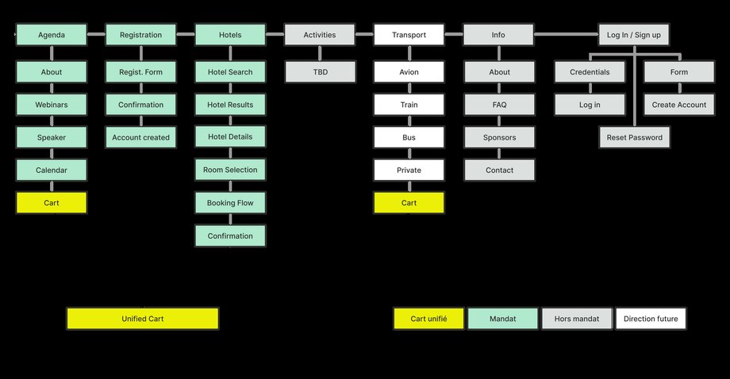
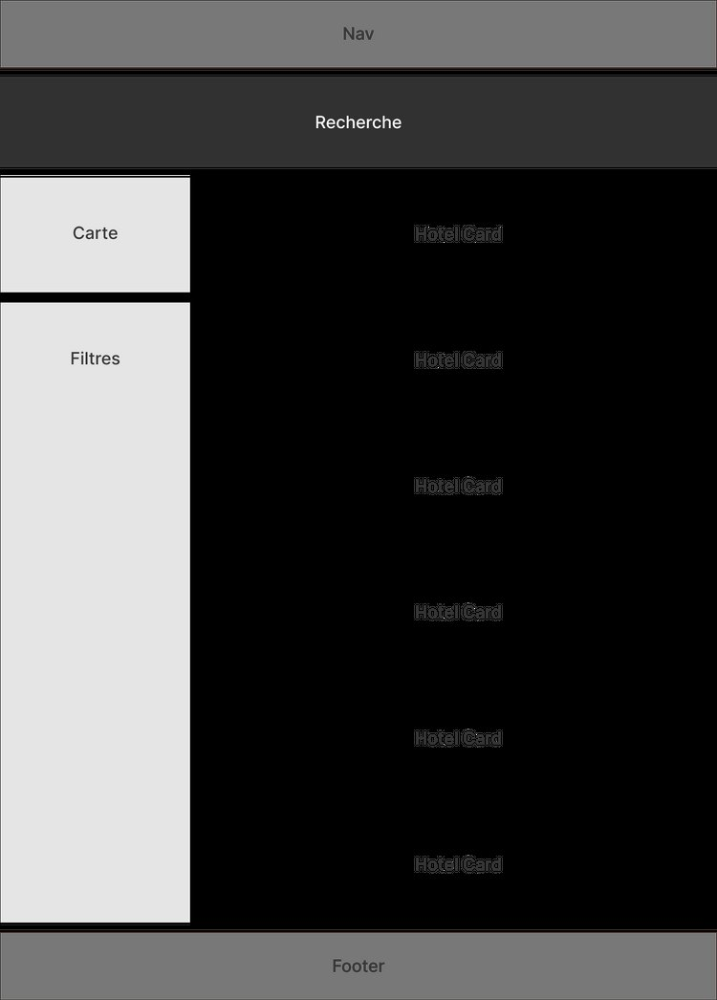
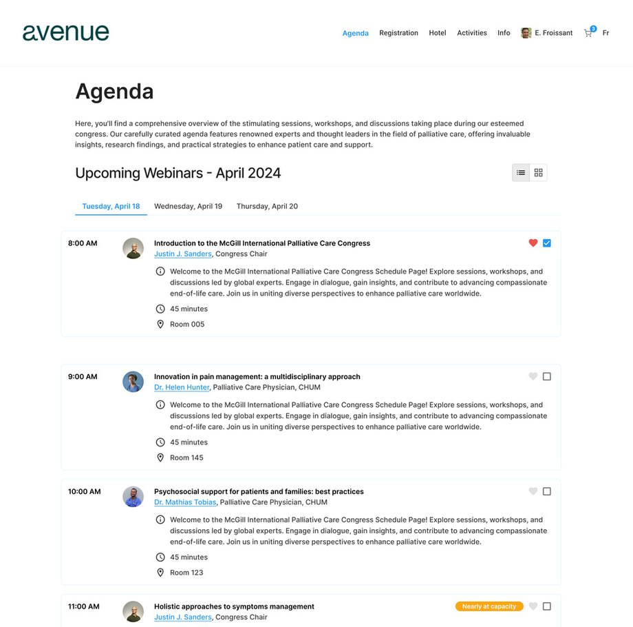
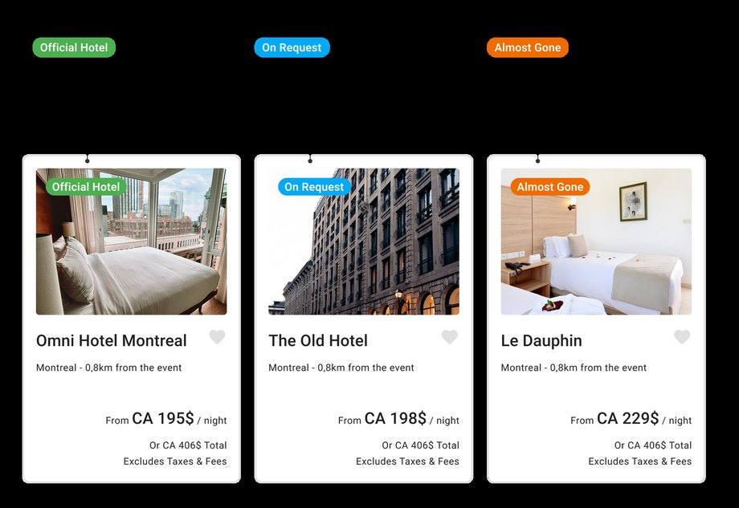
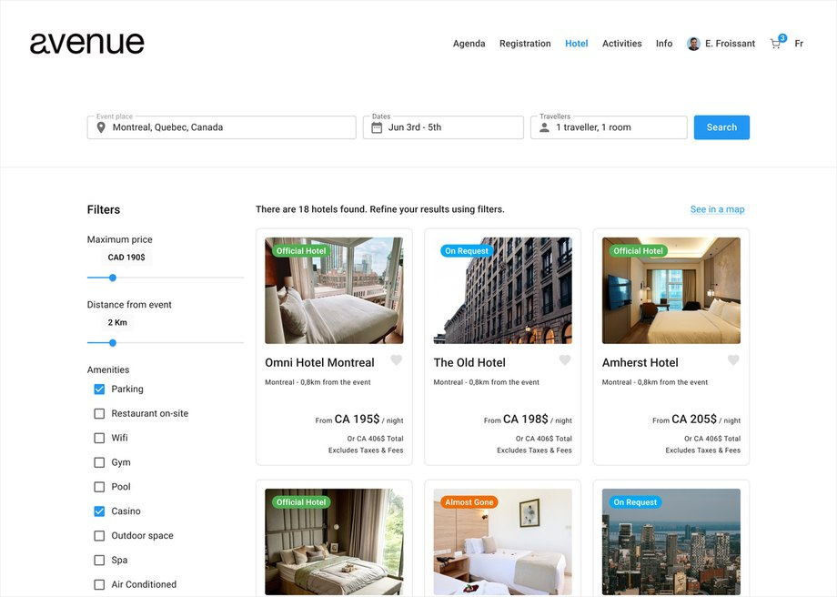
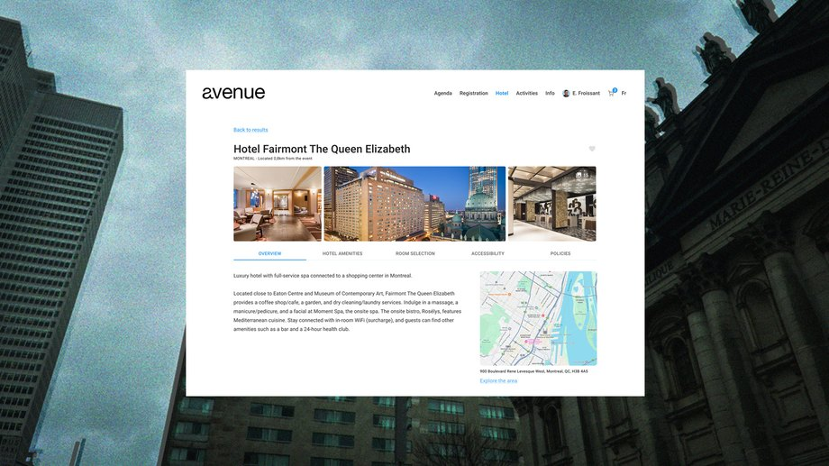

Use Case 01
Outil de gestion d’événement
Groupe Voyage Québec
—
Réunir en un seul produit ce que le voyage d’affaires fragmentait : organiser un congrès, réserver un hébergement, profiter du séjour.
- Rôle
- Designer UX/UI, seul en design
- Durée
- 8 mois, janvier à août 2024
- Livré
- Un MVP qui a vendu avant d’exister
Le point de départ
Avenue voulait tout regrouper — congrès, hôtel, activités — en un seul produit. Mon mandat : concevoir l’expérience du participant, de la page d’accueil au paiement, pour un MVP capable de vendre avant d’exister.
Pas de produit existant. Pas d’étude terrain préalable. Une équipe de développement délocalisée, sans user story partagée ni processus formalisé. Et trois pages déjà réalisées, puis rejetées.
J’ai commencé par comprendre pourquoi ces trois pages avaient été rejetées, avant de définir les objectifs de design et de cadrer les contraintes techniques.
Cadrage
Cartographier avant de dessiner
Étant donné l’ampleur du projet, j’ai cherché à comprendre la vue d’ensemble avant d’entrer dans le détail. J’ai évalué les besoins avec les cheffes de projet, découpé le tout en zones fonctionnelles — Agenda, Registration, Hotels, Activities, Transport, Info — et cartographié ces zones pour monter un plan de site.

Plutôt que de partir d’une page blanche ou de réinventer la roue, je me suis appuyé sur une analyse structurelle de Booking.com publiée par un designer en 2017. Un découpage complet de l’interface m’a permis de comprendre la logique derrière chaque composant, puis de ne retenir que les tranches pertinentes pour le MVP.

Le cœur du travail
Trois décisions et ce qui les motive
Sans accès aux utilisateurs, chaque choix devait pouvoir se défendre autrement que par le goût. Voici les trois qui ont le plus pesé sur le produit.
01
Navigation par onglets
Quarante sessions de congrès à présenter sur une seule page.
Des onglets par jour plutôt qu’un défilement continu : quarante sessions d’un coup deviennent dix à la fois. Le découpage réduit la charge cognitive, et la navigation par onglets assure une compatibilité clavier complète pour les personnes qui n’utilisent pas de souris.
Lisibilité et accessibilité, une seule décision

02
Système de tags sur les hôtels
Mettre en avant les hôtels partenaires, sans tromper le participant.
J’ai proposé un système de tags contextuels plutôt qu’un tri invisible. Official Hotel nomme la relation commerciale clairement. Almost Gone et On Request signalent la disponibilité en temps réel.
Chaque tag répond à un besoin distinct : le premier sert l’intérêt commercial sans manipuler, les deux suivants réduisent l’anxiété de décision. Chaque tag est interactif.
Transparence, confiance par la contrainte commerciale

03
Une mise en page que les gens connaissent déjà
Des utilisateurs qui arrivent avec les réflexes de Booking et d’Expedia.
L’interface s’inspire délibérément des grandes plateformes de réservation. Pas par facilité, mais parce que ces automatismes sont déjà formés : les rééduquer aurait ajouté une friction inutile. J’ai choisi de capitaliser sur les réflexes existants pour libérer l’attention sur ce qui compte — choisir.
Transfert de schéma cognitif et amorçage


Ce que j’en retire
Un MVP qui vend, pas encore un produit qu’on optimise
Sans accès à de vrais utilisateurs, toutes mes décisions reposaient sur l’expertise métier et mon jugement. Le produit a convaincu, mais on ne sait pas encore s’il performe. La prochaine étape est évidente : des tests utilisateurs réels et de l’A/B testing sur les pages clés. Sans données comportementales, on a un MVP qui vend — pas encore un produit qu’on peut optimiser avec confiance.
Groupe Voyage Québec prévoit de reprendre le travail sur la plateforme cet été. Je crois que c’est la meilleure validation qu’un MVP puisse recevoir.